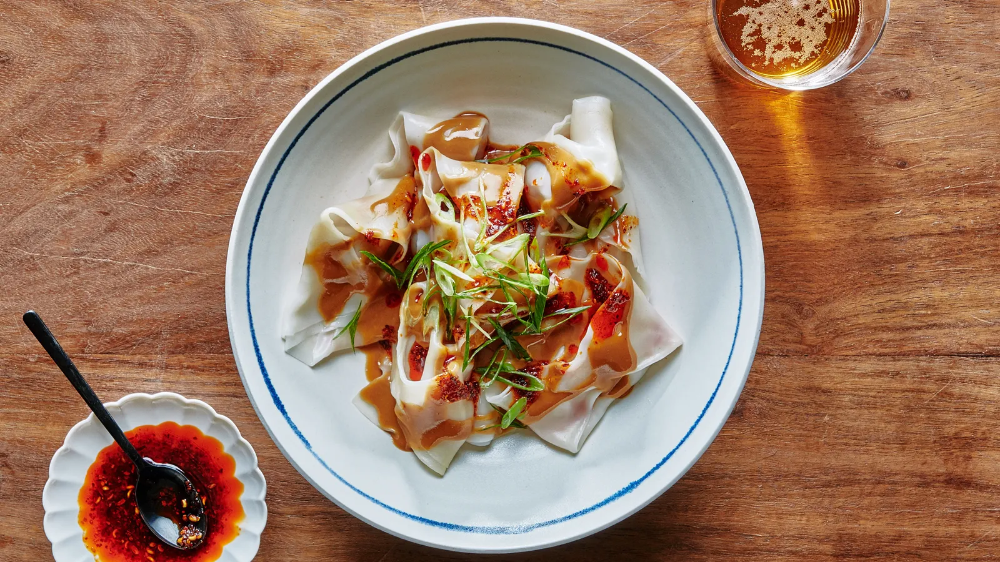

Welcome to Cooking Fun
There is nothing like cooking projects to focus the mind and put idle hands to work. Whether it is throwing together a few big-batch recipes to set you up for the week or taking your time through one steppy, complicated dessert, following a recipe is one of our favorite ways to channel our energy into one time- and attention-hogging task. The one thing that makes it better than binge-watching an entire season of that show you heard about on Twitter? There is actually something to show for it at the end. Whether you are in the mood for a deeply comforting moussaka, a big flavor black-and-white concha, or a mesmerizingly beautiful squash and caramelized onion tart, these are the cooking projects to dive into when what you really want is something to do.
There's an art to eating pork soup dumplings: Nibble a bite, cautiously slurp the soup, then eat the rest. A hearty thanks to Pamela Lau, the talented home cook (and mom of our former staff photographer, Alex Lau!) who generously shared her proportions for the dough, soup, and filling to help us create this recipe. Without Pamela's patient demonstration of her folding technique via Skype, our soup dumplings would not have had the requisite 18 pleats!